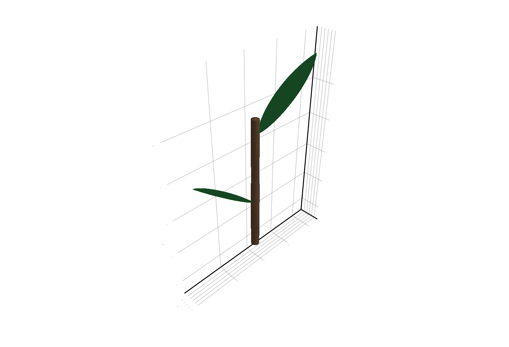
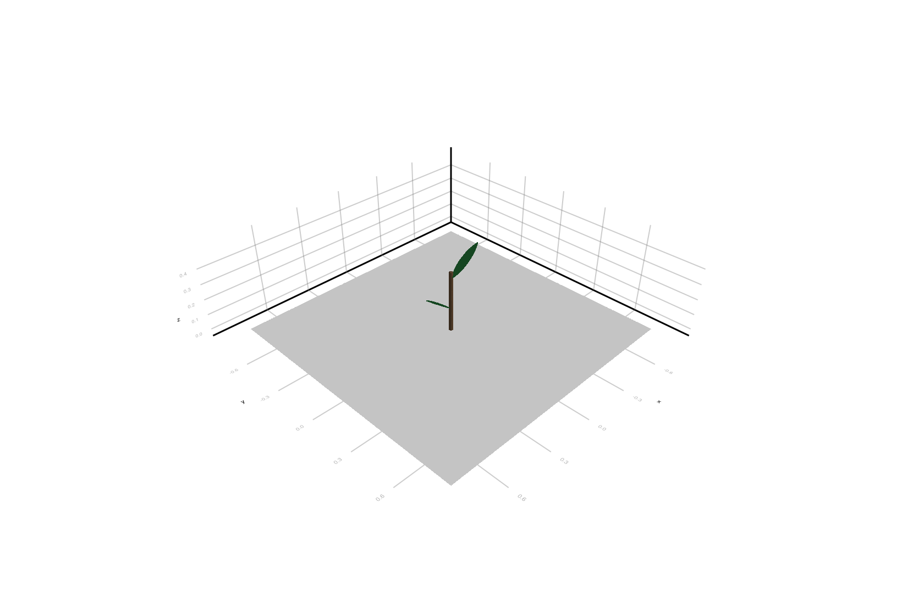
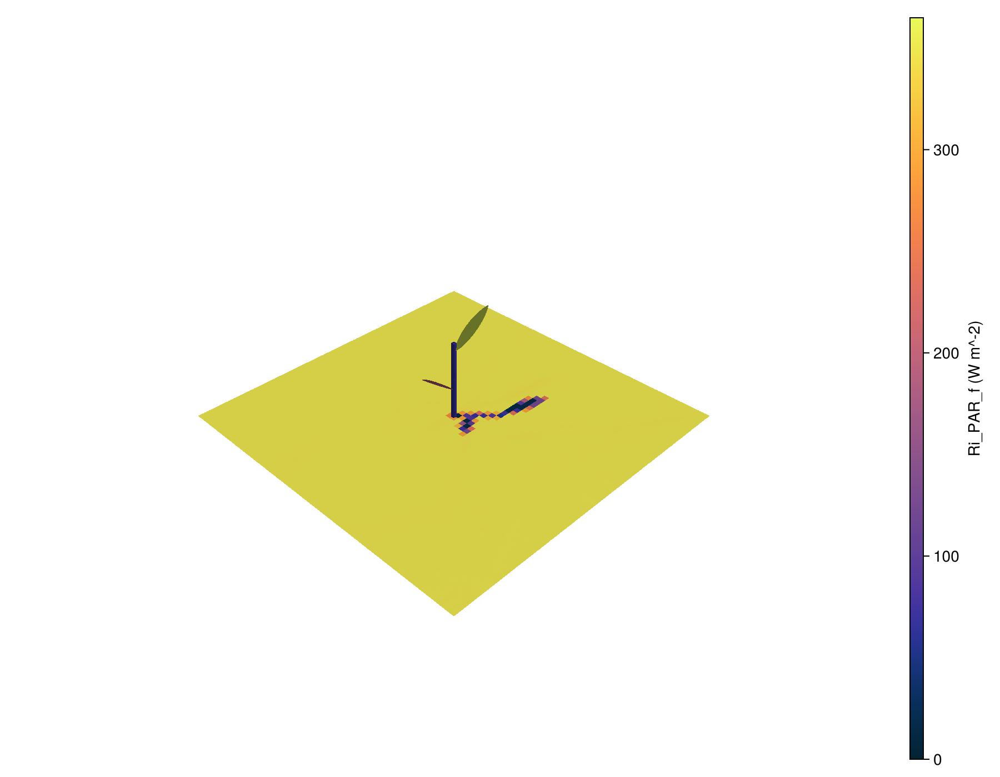

Tutorial: Interactive Workflow
This tutorial shows the in-memory workflow: build or modify a plant directly in Julia, convert it to a PlantGeom.SceneGeometry, then run the same light pipeline as in the file-based workflow.
The key bridge is:
PlantGeombuilds or edits an MTG with geometryPlantGeom.prepare_sceneturns that MTG into the dense scene representation used byArchimedLight.jl
When To Use This Workflow
- you generate plants procedurally
- you grow or prune plants in a simulation loop
- you want to test light behavior on synthetic scenes without writing files first
- you want to couple light with a geometry-building API such as the
PlantGeomgrowth API
Creating a Plant With PlantGeom's Growth API
First we import the necessary packages:
using ArchimedLight
using CairoMakie # For plotting
using Colors # For color definitions
using GeometryBasics # For geometry
using MultiScaleTreeGraph # For the MTG data structure
using OrderedCollections: OrderedDict
using PlantGeom # For the growth and visualization APIThen we build a simple plant with two successive internode–leaf pairs. The internodes are cylinders and the leaves are laminae with a midrib.
First, we define mesh prototypes for the internode and leaf shapes:
stem_ref = RefMesh(
"stem",
GeometryBasics.mesh(
GeometryBasics.Cylinder(
Point(0.0, 0.0, 0.0),
Point(1.0, 0.0, 0.0),
0.5,
),
),
RGB(0.48, 0.36, 0.25),
)
leaf_ref = lamina_refmesh(
"leaf";
length=1.0,
max_width=1.0,
n_long=36,
n_half=7,
material=RGB(0.19, 0.61, 0.29),
)
prototypes = Dict(
:Internode => RefMeshPrototype(stem_ref, true),
:Leaf => PointMapPrototype(
leaf_ref;
defaults=(base_angle_deg=42.0, bend=0.30, tip_drop=0.08),
intrinsic_shape=params -> LaminaMidribMap(
base_angle_deg=params.base_angle_deg,
bend=params.bend,
tip_drop=params.tip_drop,
),
),
)Dict{Symbol, PlantGeom.AbstractMeshPrototype} with 2 entries:
:Leaf => PointMapPrototype{RefMesh{String, Mesh{3, Float64, TriangleFace…
:Internode => RefMeshPrototype{RefMesh{String, Mesh{3, Float64, NgonFace{3, O…Then, we add two internode–leaf pairs to the MTG. This low-level PlantGeom helper emits component nodes; it does not create botanical phytomere nodes:
scene_mtg = Node(NodeMTG(:/, :Scene, 1, 1))
small_plant = Node(scene_mtg, NodeMTG(:/, :Plant, 1, 1))
small_plant[:functional_group] = "example_plant"
small_plant[:object_id] = 1
first_pair = emit_internode_leaf!(
small_plant;
internode=(link=:/, index=1, length=0.20, width=0.022),
leaf=(index=1, offset=0.15, length=0.22, width=0.05, thickness=0.02, y_insertion_angle=52.0),
)
second_pair = emit_internode_leaf!(
first_pair.internode;
internode=(index=2, length=0.18, width=0.020),
leaf=(index=2, offset=0.14, length=0.24, width=0.055, thickness=0.02, phyllotaxy=180.0, y_insertion_angle=54.0),
)
scene_mtg/ 1: Scene
└─ / 2: Plant
└─ / 3: Internode
├─ + 4: Leaf
└─ < 5: Internode
└─ + 6: Leaf
By default, the growth API from PlantGeom uses :Internode and :Leaf symbols for the component types. The component type names are important because they link the geometry to the optical models later on.
This example is taken from PlantGeom's documentation, and annotated with ARCHIMED metadata (functional_group, object_id) so it can be passed to ArchimedLight.jl.
The only addition we had to make was to declare the functional_group of the plant as an attribute, because ArchimedLight.jl uses the functional group to link the geometry to the models. The object_id is not mandatory, it is used to identify the plants in the scene. If not specified, the plants are numbered by their order as scene children.
We can now visualize the MTG with plantviz:
rebuild_geometry!(scene_mtg, prototypes)
plantviz(scene_mtg, figure=(size=(820, 560),))
Convert To SceneGeometry
The MTG is not yet in the format needed by ArchimedLight.jl. We need to convert it to a PlantGeom.SceneGeometry with the PlantGeom.prepare_scene function:
scene = PlantGeom.prepare_scene(scene_mtg;scene_xy_bounds=(-0.8, -0.8, 0.8, 0.8))PlantGeom.SceneGeometry{MultiScaleTreeGraph.Node{MultiScaleTreeGraph.NodeMTG, MultiScaleTreeGraph.ColumnarAttrs}, GeometryBasics.Mesh{3, Float64, GeometryBasics.TriangleFace{Int64}, (:position,), Tuple{Vector{GeometryBasics.Point{3, Float64}}}, Vector{GeometryBasics.TriangleFace{Int64}}}, Float64}(/ 1: Scene
└─ / 2: Plant
└─ / 3: Internode
├─ + 4: Leaf
└─ < 5: Internode
└─ + 6: Leaf
, Mesh{3, Float64, GeometryBasics.TriangleFace{Int64}}(...), [3, 3, 3, 3, 3, 3, 3, 3, 3, 3 … 6, 6, 6, 6, 6, 6, 6, 6, 6, 6], Dict{Int64, PlantGeom.SceneNodeData{Float64}}(3 => PlantGeom.SceneNodeData{Float64}(0.014460398601154693, (6.0873323407844364e-18, 4.246763202712342e-19, 0.1000000000000001), 3, PlantGeom.SourceOwnerKey(1, 3)), 6 => PlantGeom.SceneNodeData{Float64}(0.00938078495996715, (-0.10426201051805005, 1.234873787408184e-17, 0.4101334094996882), 6, PlantGeom.SourceOwnerKey(1, 6)), 4 => PlantGeom.SceneNodeData{Float64}(0.007817598115745169, (0.09404229655567382, 5.819553911166995e-20, 0.21735299503467223), 4, PlantGeom.SourceOwnerKey(1, 4)), 5 => PlantGeom.SceneNodeData{Float64}(0.011837336268772699, (1.654342180468932e-17, -1.095701913871222e-19, 0.29000000000000004), 5, PlantGeom.SourceOwnerKey(1, 5))), "interactive.scene", (-0.8, -0.8, 0.8, 0.8), PlantGeom.SceneUnits(m))PlantGeom.prepare_scene computes the merged mesh, node areas, barycentres, and node-to-face mapping needed by the light solver. The scene_xy_bounds are used for the rasterization stage, so they should be chosen to fit the plant geometry.
Add Models
ArchimedLight.jl needs optical models to compute light interception. We can define them directly in Julia as GroupModel and TypeModel objects, then prepare them with prepare_models. The example below defines two group models: one for the plant and one for the pavement. Each group model has one type model with Translucent interception and specific optical properties.
The pavement model is included here because we will add an explicit ground later on, and we want it to have different optical properties from the plant. Optical properties are defined as (scattering_coeff_par, scattering_coeff_nir), where the absorbed fraction is 1 - scattering_coeff.
models = prepare_models([
GroupModel(
"example_plant";
types=OrderedDict(
"Internode" => TypeModel(
interception=InterceptionModel(
model="Translucent",
transparency=0.0,
optical_properties=OpticalProperties(0.15, 0.90),
),
),
"Leaf" => TypeModel(
interception=InterceptionModel(
model="Translucent",
transparency=0.0,
optical_properties=OpticalProperties(0.15, 0.90),
),
),
),
),
GroupModel(
"pavement";
types=OrderedDict(
"Cobblestone" => TypeModel(
interception=InterceptionModel(
model="Translucent",
transparency=0.0,
optical_properties=OpticalProperties(0.12, 0.60),
),
),
),
),
])
keys(models.groups) |> collect2-element Vector{String}:
"example_plant"
"pavement"That pattern is convenient for synthetic scenes, tests, and gradual model setup.
Add Ground Explicitly
The ground can be added as a special case of scene geometry with PlantGeom.add_ground!. This is useful when:
- you want to include the ground in the directional visibility and scattering calculations for better realism near the soil
- you want to visualize the soil interception with an explicit ground patch
add_ground!(
scene;
nx=60,
ny=60,
xy_bounds=(-0.8, -0.8, 0.8, 0.8),
group="pavement",
type="Cobblestone",
)PlantGeom.SceneGeometry{MultiScaleTreeGraph.Node{MultiScaleTreeGraph.NodeMTG, MultiScaleTreeGraph.ColumnarAttrs}, GeometryBasics.Mesh{3, Float64, GeometryBasics.TriangleFace{Int64}, (:position,), Tuple{Vector{GeometryBasics.Point{3, Float64}}}, Vector{GeometryBasics.TriangleFace{Int64}}}, Float64}(/ 1: Scene
├─ / 2: Plant
│ └─ / 3: Internode
│ ├─ + 4: Leaf
│ └─ < 5: Internode
│ └─ + 6: Leaf
├─ + 7: Cobblestone
├─ + 8: Cobblestone
├─ + 9: Cobblestone
├─ + 10: Cobblestone
├─ + 11: Cobblestone
├─ + 12: Cobblestone
├─ + 13: Cobblestone
├─ + 14: Cobblestone
├─ + 15: Cobblestone
├─ + 16: Cobblestone
├─ + 17: Cobblestone
├─ + 18: Cobblestone
├─ + 19: Cobblestone
├─ + 20: Cobblestone
├─ + 21: Cobblestone
├─ + 22: Cobblestone
├─ + 23: Cobblestone
├─ + 24: Cobblestone
…, Mesh{3, Float64, GeometryBasics.TriangleFace{Int64}}(...), [3, 3, 3, 3, 3, 3, 3, 3, 3, 3 … 3602, 3602, 3603, 3603, 3604, 3604, 3605, 3605, 3606, 3606], Dict{Int64, PlantGeom.SceneNodeData{Float64}}(1917 => PlantGeom.SceneNodeData{Float64}(0.0007111104501618115, (0.04000000096857548, 0.54666668176651, 0.0), 1917, PlantGeom.SourceOwnerKey(1912, 1917)), 107 => PlantGeom.SceneNodeData{Float64}(0.0007111097547749523, (-0.7599999904632568, 0.2800000011920929, 0.0), 107, PlantGeom.SourceOwnerKey(102, 107)), 601 => PlantGeom.SceneNodeData{Float64}(0.0007111113442306305, (-0.54666668176651, 0.6533333361148834, 0.0), 601, PlantGeom.SourceOwnerKey(596, 601)), 2672 => PlantGeom.SceneNodeData{Float64}(0.0007111113442315187, (0.3866666704416275, -0.1200000047683716, 0.0), 2672, PlantGeom.SourceOwnerKey(2667, 2672)), 1356 => PlantGeom.SceneNodeData{Float64}(0.0007111112448904278, (-0.20000000298023224, -0.013333333656191824, 0.0), 1356, PlantGeom.SourceOwnerKey(1351, 1356)), 407 => PlantGeom.SceneNodeData{Float64}(0.0007111097547749523, (-0.6266666650772095, 0.2800000011920929, 0.0), 407, PlantGeom.SourceOwnerKey(402, 407)), 1162 => PlantGeom.SceneNodeData{Float64}(0.0007111105495027914, (-0.2800000011920929, -0.3866666704416275, 0.0), 1162, PlantGeom.SourceOwnerKey(1157, 1162)), 3233 => PlantGeom.SceneNodeData{Float64}(0.0007111105495027914, (0.6266666650772095, 0.4400000125169754, 0.0), 3233, PlantGeom.SourceOwnerKey(3228, 3233)), 960 => PlantGeom.SceneNodeData{Float64}(0.0007111105495027914, (-0.3866666704416275, 0.6266666650772095, 0.0), 960, PlantGeom.SourceOwnerKey(955, 960)), 2874 => PlantGeom.SceneNodeData{Float64}(0.0007111097547749523, (0.46666666865348816, 0.46666666865348816, 0.0), 2874, PlantGeom.SourceOwnerKey(2869, 2874))…), "interactive.scene", (-0.8, -0.8, 0.8, 0.8), PlantGeom.SceneUnits(m))We can now visualize the plant and the ground together:
plantviz(scene.mtg, figure=(size=(820, 560),))
Run One Simulation And Visualize It
The example below runs a single light simulation on that plant, and visualizes the result directly in 3D.
First, we define the sky conditions with a SkyState:
sky = SkyState(
135.0, # sun azimuth in degrees
60.0, # sun elevation in degrees
350.0, # PAR irradiance on horizontal ground, W m^-2
250.0, # NIR irradiance on horizontal ground, W m^-2
0.95, # direct fraction
0.05, # diffuse fraction
)SkyState(135.0, 60.0, 600.0, 350.0, 250.0, 0.95, 0.05)This can be replaced with a row from a PlantMeteo.TimeStepTable, and ArchimedLight.jl will compute the SkyState from the solar geometry and irradiance values in the meteo file.
Then we define the LightOptions, which defines simulations parameters such as the number of turtle sectors, pixel size, toricity, and scattering behavior:
options = LightOptions(
turtle_sectors=16,
pixel_size=0.01,
toricity=true,
scattering=false,
)LightOptions(false, 16, 0.01, true, false, 20, 0.01, 0.15, 0.3, false, false, false, AutoPixelHitStack, true, 15.0, :interval_mean, 0.0, true, false, true, true, false, nothing, false, false, nothing, true, ())Finally, we create a LightSimulation and run one light step:
sim = LightSimulation(scene, models; options=options)
step = run_light(sim, sky; step_duration_seconds=1800.0)LightStepResult
------------------------------------------------------------
sky PAR 350 W m^-2 | NIR 250 W m^-2
sun azimuth 135° | elevation 60°
mix direct 95% | diffuse 5% | SW 600 W m^-2
turtle 17 sectors (sky=16, sun=1)
------------------------------------------------------------
incident PAR 1.612 MJ | NIR 1.152 MJ
absorbed PAR 1.419 MJ | NIR 458.082 kJ
scattering off | iterations 0 | converged n/a
------------------------------------------------------------
The same LightSimulation can also be reused with meteo rows or meteo tables. Use the staged pipeline only when you need to inspect or customize internal solver stages.
To visualize the spatial distribution of light, we need to attach the results back to the MTG with attach_light_step!:
attach_light_step!(scene, step; fields=[:incident_par_flux])/ 1: Scene
├─ / 2: Plant
│ └─ / 3: Internode
│ ├─ + 4: Leaf
│ └─ < 5: Internode
│ └─ + 6: Leaf
├─ + 7: Cobblestone
├─ + 8: Cobblestone
├─ + 9: Cobblestone
├─ + 10: Cobblestone
├─ + 11: Cobblestone
├─ + 12: Cobblestone
├─ + 13: Cobblestone
├─ + 14: Cobblestone
├─ + 15: Cobblestone
├─ + 16: Cobblestone
├─ + 17: Cobblestone
├─ + 18: Cobblestone
├─ + 19: Cobblestone
├─ + 20: Cobblestone
├─ + 21: Cobblestone
├─ + 22: Cobblestone
├─ + 23: Cobblestone
├─ + 24: Cobblestone
…Then we can plot the scene colored by Ri_PAR_f:
par_max = maximum(values(step.budget.incident_flux.total.par))
fig, ax, p = plantviz(
scene.mtg;
color=:Ri_PAR_f,
colormap=:thermal,
colorrange=(0.0, par_max),
color_missing=:gray85,
figure=(size=(900, 700),),
)
ax.show_axis[] = false
PlantGeom.colorbar(fig[1, 2], p, label="Ri_PAR_f (W m^-2)")
fig
Practical Advice
- pass
scene_xy_bounds=explicitly when your scene was not read from an.ops - add ground explicitly with
PlantGeom.add_ground!when you want inspectable paving or better scattering realism near the soil - use
attach_light_step!once you want to visualize the results throughPlantGeom